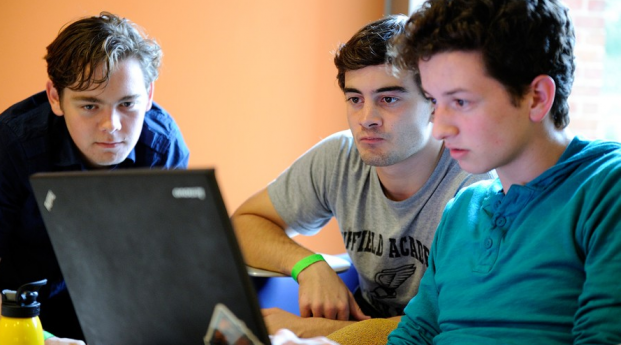

Nick at Work
Currently Nicholas is a student at Johns Hopkins University working towards a masters degree in physics and a bachelors degree with a triple major in physics, math, and applied math & statistics.
Most recently he worked as a summer intern for Optiver US.
View his resume here (Updated Jan. 2016)
Most recently he worked as a summer intern for Optiver US.
View his resume here (Updated Jan. 2016)
Optiver US LLC
June 2015 - August 2015
Nicholas worked for Optiver as a derivatives trading intern. Here he learned derivative theory, trading concepts and practiced options trading in a simulated environment. He also developed tools to streamline analysis of market data to allow for development of new trading strategies.
CERN
January 2015 - May 2015
Nicholas worked here as a part of the University of Michigan Semester at CERN program. He worked on the CMS experiment in Andrei Gritsan's research group. He analyzed Monte Carlo data and contributed to the Matrix Element Likelihood Analysis tool in an effort to ultimately distinguish between gluon-gluon and vector boson fusion as production methods of the higgs boson in LHC experiments.
Johns Hopkins University Applied Physics Lab
June 2014 - August 2014
Nicholas worked at JHU APL as an intern in the Air and Missile Defense Sector as part of the Advanced Concepts and Technologies group. Here, he worked to develop parametric estimation algorithms for feature estimation in computer vision problems. He also worked on the group's Electronic Warfare Simulation, where he integrated a radar model and made graphical and UI improvements.